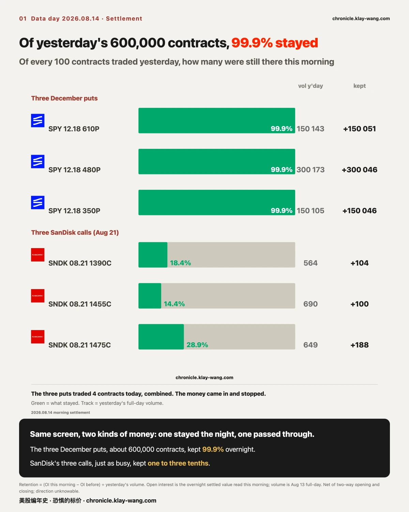
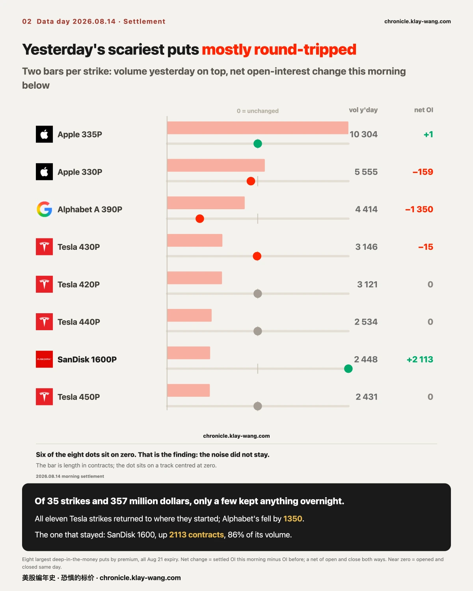
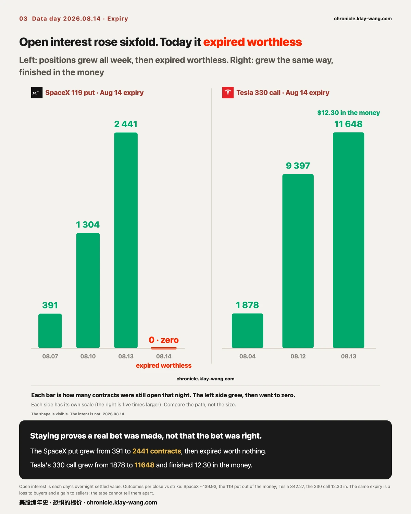
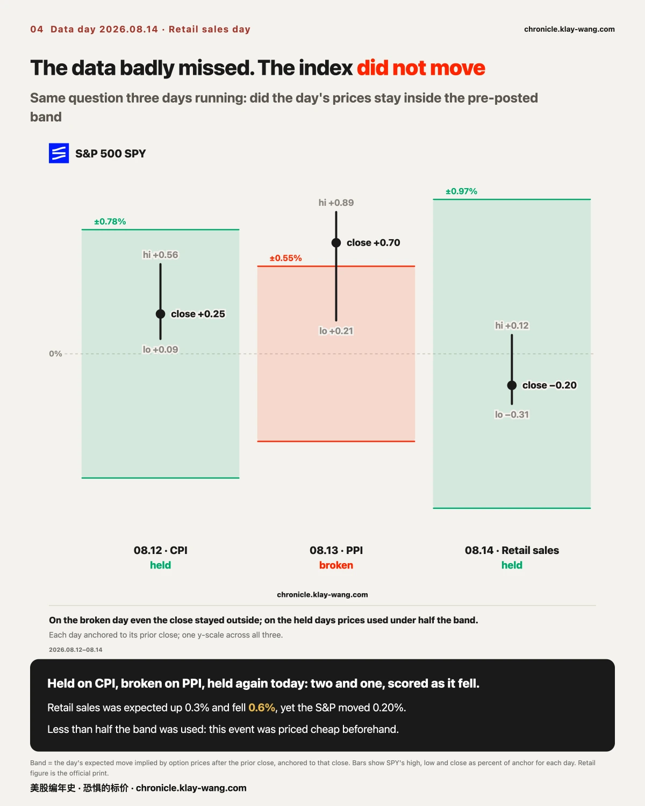
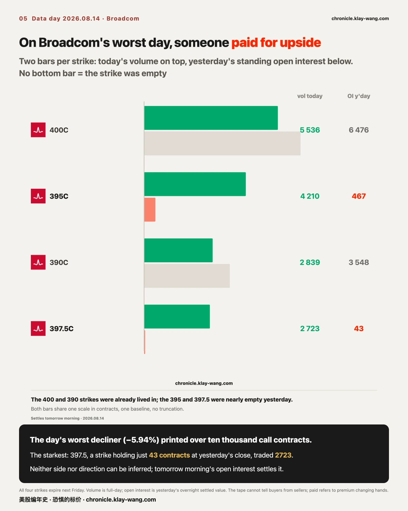
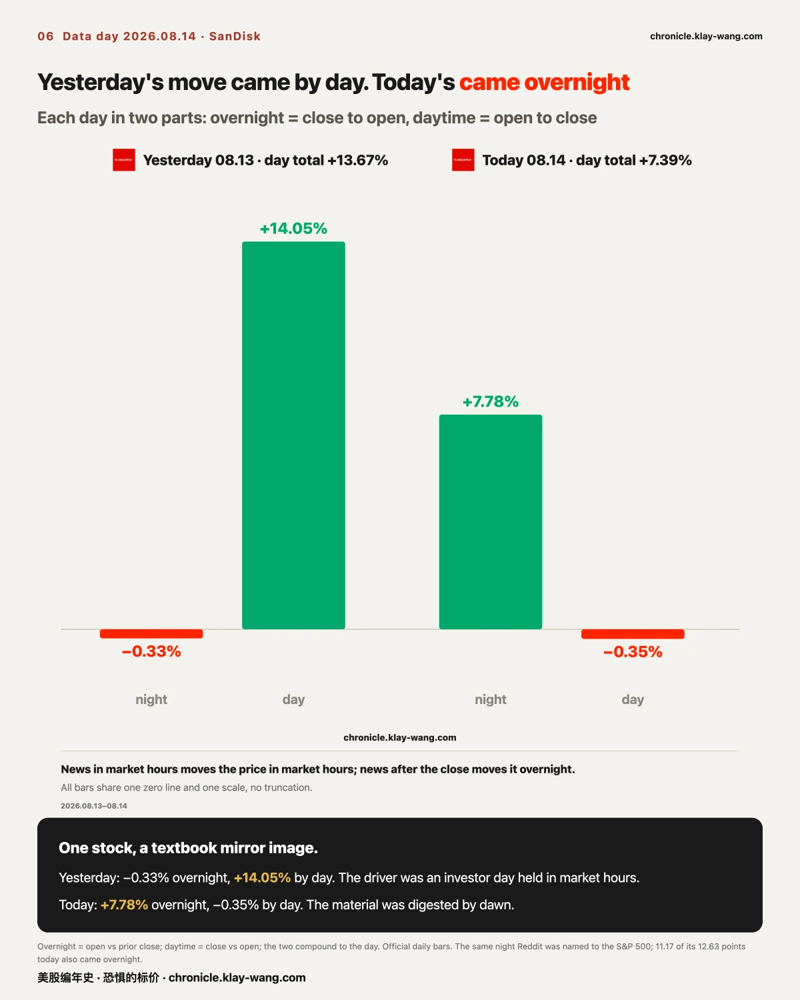
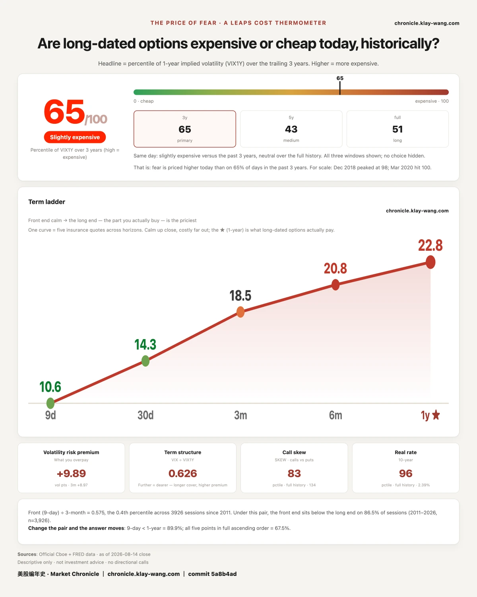

Section 1 is the main course: three flows on the same unusual-activity screen were settled this morning, with completely different results.
Section 2 closes the books on two expiries we have tracked for a week, including a put that kept adding open interest in the week it was doomed.
Section 3 covers the fence on a badly missed retail print; section 4, SanDisk's two-day mirror image.
Section 5 settles yesterday's accounts; section 6 is the daily gauge.

First, yesterday's promise. We wrote: the December 18 legs entered the day with 8307, 11086 and 6917 contracts of open interest.
If this morning's settlement jumped to the order of 150,000, 300,000 and 150,000, the third build would be confirmed; if not, it was a day trade.
We promised to publish either result. This morning's numbers:
| Leg | OI before | Volume yesterday | OI this morning | Retained |
|---|---|---|---|---|
| 610 put | 8307 | 150143 | 158358 | 99.9% |
| 480 put | 11086 | 300173 | 311132 | 99.9% |
| 350 put | 6917 | 150105 | 156963 | 99.9% |
Nearly every contract stayed, and the 1 to 1.97 to 0.99 ratio preserved the original 1:2:1.
The three legs traded 4 contracts today, combined. The money came in, and then it stopped. That makes three builds in two days,
roughly 1.2 million contracts of the same shape now resting on one index, and all three price lists are real.
Two other flows looked just as dramatic on yesterday's screen. Both were settled this morning:
The deep-in-the-money puts mostly round-tripped. Of yesterday's 35 strikes across 11 names, roughly 357 million dollars of premium,
Tesla accounted for eleven strikes, and every one of them came back to its starting open interest, or lower.
The 430 put traded 3146 contracts yesterday; open interest went from 271 to 256. Alphabet's strike fell from 1933 to 583.
What actually stayed: SanDisk's 1600 put (924 to 3037, about 86% of yesterday's volume) and two Apple strikes.
SanDisk's three calls kept about a fifth. The 1390 went from 363 to 467, nowhere near four digits;
the two strikes that appeared out of nowhere kept 100 and 188 contracts each. New positions, yes, but the small end of the volume.
Put the three results together and today's takeaway writes itself:
the volume-to-open-interest multiple only tells you a strike was busy. It cannot separate new positions from churn.
The only thing that can is the next morning's open interest. Same screen, same scary multiples, one flow kept 99.9%, another kept under a third.
The unusual-activity ranking and the actual-bets ranking are not the same list.
Three boundaries, stated together. Staying overnight means positions exist, not which side built them: buyer-opened and seller-opened both raise open interest.
The retained number is a net of two-way opening and closing. And SanDisk held an investor day yesterday; event-day churn runs naturally high, so the comparison is a parallel, not a verdict.

Two expiries we flagged last week came due today. Yesterday we wrote that this column was empty and the settlement numbers would come tomorrow. Here they are.
Tesla's two calls finished in the money. The stock closed at 342.27; the 330 strike finished 12.30 in the money, the 335 strike 7.30.
The path matters more: the 330's open interest went 1878 when it first appeared in our ledger on August 4, to 9397, to 11648 entering expiry;
the 335 went 2453 to 16997 to 17112. From first record to expiry, positions only grew.
SpaceX: three calls in the money, one put to zero. At roughly 139.93, the 119, 123 and 127 calls finished 20.93, 16.93 and 12.93 in the money.
The 119 put's open interest went from 391 on August 7 to 2441 entering expiry, six times over, and expired worthless today.
In the week it was doomed, the position kept growing. That sentence describes a shape we observed, not anyone's intent:
it could be a hedge leg, a spread leg, or part of a margin arrangement. We cannot tell, so we do not guess.
This settles the other half of Section 1's lesson:
staying overnight proves someone really bet. It does not prove the bet was right. Tesla's calls stayed and finished in the money;
the SpaceX put stayed just as firmly and finished worthless. Whether money stayed and whether it was right are two different questions. We measure the first and never grade the second:
the same worthless expiry is a loss to its buyer and a gain to its seller, and the tape cannot tell them apart.

Retail sales was today's scheduled event. July fell 0.6% against expectations of a 0.3% rise, the sharpest drop in over a year, wrong direction and all.
Before the open, the options market posted its usual fence: SPY plus or minus 7.58 points (0.97%), a band of 770.30 to 785.46;
QQQ plus or minus 11.50 (1.57%), 720.57 to 743.57, both anchored to yesterday's close.
The result: SPY's high, low and close (778.80 / 775.43 / 776.34) all stayed inside, using less than half the band.
QQQ (734.39 / 728.32 / 731.07) likewise.
Same question, third round: held on CPI day, broken on PPI day, held again today. Two holds, one break; we keep score as it falls.
A badly missed number with an index that barely moved says the market had priced this event cheaply beforehand.
A flat index does not mean a quiet market. Today's real shape is semiconductors splitting 13 points internally:
SanDisk +7.39%, AMD +6.50%, Micron +2.30% on one side; Broadcom −5.94%, Intel −1.97%, TSMC −0.96% on the other.
All seven megacaps sat within plus or minus 1%, which is noise, not a selloff. The winners are not all storage (AMD is not),
and the worst loser is also a semiconductor. This is not storage versus the market. Semiconductors split among themselves.
Whose money went where, we have never measured and do not write.
Broadcom deserves one more line. Besides the day's worst decline, its options were busy:
the near-the-money 395 call traded 4210 contracts against 467 standing, and the 397.5, a strike almost nobody held, traded 2723 against 43.
Only one sentence can be said: someone paid for upside at the prices it fell to.
Neither direction nor side can be inferred; whether it stayed will be answered by tomorrow morning's open interest, and it goes on the follow-up list.
One more thing specific to today. It was the filing deadline for second-quarter 13F reports, so you likely saw a batch of so-and-so-dumped-so-and-so headlines.
A 13F is a quarter-end snapshot; Q2 ended June 30, and the 45-day deadline landed today.
The documents are new today. The trades inside them happened six or more weeks ago.
Using a June 30 snapshot to explain any stock's move today mistakes the filing date for the trade date.

Yesterday we split SanDisk's 13.67% into two segments: a gap of −0.33% and an intraday run of +14.05%. The entire move happened in daylight.
Today inverted it exactly. A gap of +7.78% and an intraday drift of −0.35%. It opened at 1646.93 and closed at 1641.11;
the price was set overnight and daytime added nothing. Read together, the two days are a textbook mirror:
yesterday's driver was an investor day held during market hours, so the price moved during market hours;
overnight the market digested the full material, and by this morning the price was already set.
The same night produced an even purer example. Reddit announced after yesterday's close that it joins the S&P 500 before the open on August 18.
It rose 12.63% today, 11.17 points of it in the gap and only 1.31 during the day. The announcement happened overnight, so the pricing did too;
this is precisely the shape the gap ledger was built to catch. It is not in our options universe, so we have prices but no premium data, and we say so.
Yesterday's third open question gets its answer here: 16 of the 17 names printed a negative intraday segment today.
Daytime selling returned, but outside SanDisk and Micron the night set no big prices. Three days in a row now:
Wednesday priced at night and sold by day; Thursday priced nothing at night and ran all day; Friday mild night, light selling.
Three days, three different shapes. That is what splitting the day in two is for.

Yesterday's open question was whether 67.2 would keep climbing or come back down. Today's answer: down.
The reading is 65.3, after 67.2 yesterday and 61.9 the day before. The card shows 65 out of 100.
One-year volatility sits at 22.75, down 0.07 from 22.82.
Every tenor from the short end to one year got slightly cheaper: nine days 10.61, one month 14.25, three months 18.46, six months 20.80, one year 22.75.
Put back into today's tape, this is the same sentence as the fence section:
on a day the data badly missed, the index did not move, and insurance repriced slightly lower across the whole curve.
Nobody paid up for this event beforehand, and nobody felt the need to buy protection after.
As always: this number is not for the buyers of insurance. It is the price the sellers quoted,
the people who must quote the next year and pay when they quote it wrong. It does not tell you about tomorrow. It tells you what they charged today.
Next Friday, August 21, is the monthly options expiry, when most of this week's files settle at once:
Alphabet's two puts, SpaceX's sixteen strikes, Micron's ladder, and SanDisk's crowded 1600 line on both sides.
Reddit formally joins the S&P 500 on Tuesday; the announcement-day gap is on record and the effective-day gap will be its counterpart.
Wednesday is the volatility futures roll, which must be read alongside whatever the gauge's curve does around it.
Beyond that, five items for next issue: what becomes of the 3037 SanDisk 1600 puts that stayed this morning;
whether Broadcom's two near-the-money calls (395 and 397.5) kept their positions overnight;
whether Broadcom's inversion narrows or keeps widening past 0.85; whether Nvidia's flip level leaves the 200 to 210 zone;
and round four of the fence on Monday, after two holds and one break.